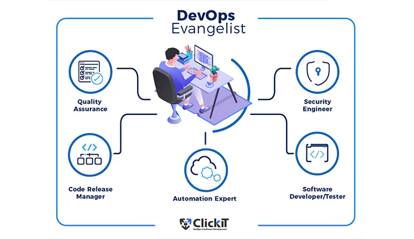
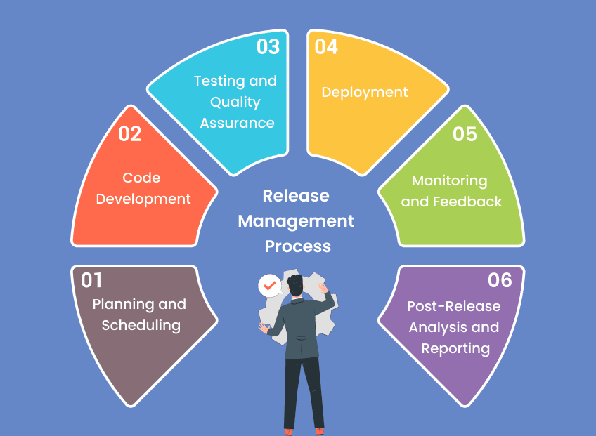
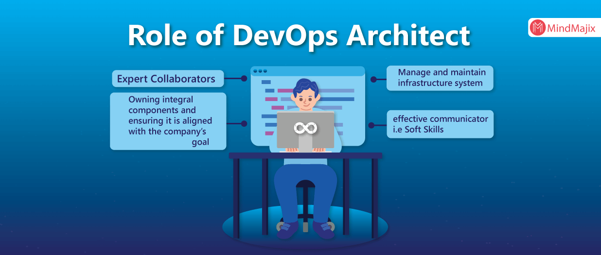
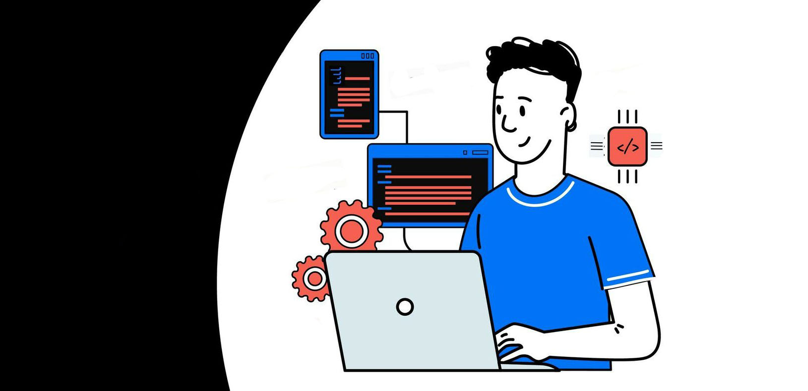
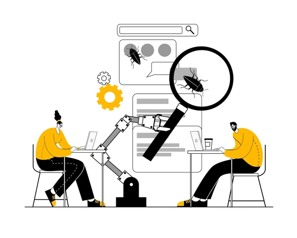

Roles en DevOps

Los roles más importantes en DevOps son los siguientes:
DevOps Evangelist
Es el líder que promueve la filosofía de DevOps dentro de la organización. Su tarea principal es asegurar que todos los miembros del equipo estén alineados con los objetivos de DevOps y fomentar la colaboración continua.
Release Manager
Supervisa las versiones del software y garantiza que se entreguen de manera eficiente. Su papel es coordinar el proceso de lanzamiento, asegurando que todas las pruebas se completen y que la liberación sea estable.
Automation Architect
Este rol se centra en la automatización de los procesos, desde la integración y las pruebas hasta el despliegue. Asegura que los equipos utilicen las herramientas adecuadas para automatizar tareas repetitivas, lo que mejora la eficiencia.
Desarrolladores y Testers
Los desarrolladores son responsables de escribir el código, mientras que los testers se aseguran de que el software esté libre de errores. En DevOps, ambos roles se integran, y los desarrolladores también deben probar su código de manera continua.
Quality Assurance (QA)
Asegura que el software cumpla con los estándares de calidad antes de ser liberado a producción. Se enfocan en establecer procesos de calidad para prevenir errores desde el inicio.
Security and Compliance Engineer
Este rol asegura que el software cumpla con las políticas de seguridad y normativas legales. Debe integrar prácticas de seguridad dentro de todo el ciclo de vida del desarrollo, desde el código hasta la producción.